실습 3: GeoAI
QGIS에 GeoAI 설치
QGIS에서 Geospatial AI를 사용하기 위한 플러그인 설치
TMS for Korea 설치
QGIS에서 VWorld Satellite 맵을 사용하기 위해 TMS for Korea 플러그인 설치
이 맵은 테스트용으로만 사용해야 하며 실제 상업적인 서비스를 위해 사용할 떄는 라이선스를 별도로 살펴야 한다.
테스트 후 사용한 geoTiff 파일은 모두 삭제한다.
QGIS에 TMS for Korea 플러그인 설치과정 안내
테스트용 이미지 생성
GeoAI는 raster 이미지(geoTiff 등)를 사용하기 때문에, AI 분석에 사용하기 위해 VWorld Satellite 맵을 geoTiff 형식으로 내보내야 한다.
QGIS 맵을 geoTiff 형식으로 내보내 AI 테스트용 이미지 생성
위 과정을 통해 테스트할 부분을 geoTiff 파일로 만들고 그 파일을 QGIS에 하나의 레이어로 올린다.
QGIS에서 GeoAI 사용
1. 위성사진에서 나무 찾기(Tree Segmentation)
테스트용 이미지 생성 방법을 이용해 지도에 나무가 보이는 영역을 geoTiff로 저장한 후 사용한다.
이 예에서는 “tree” 레이어로 올려 사용한다.
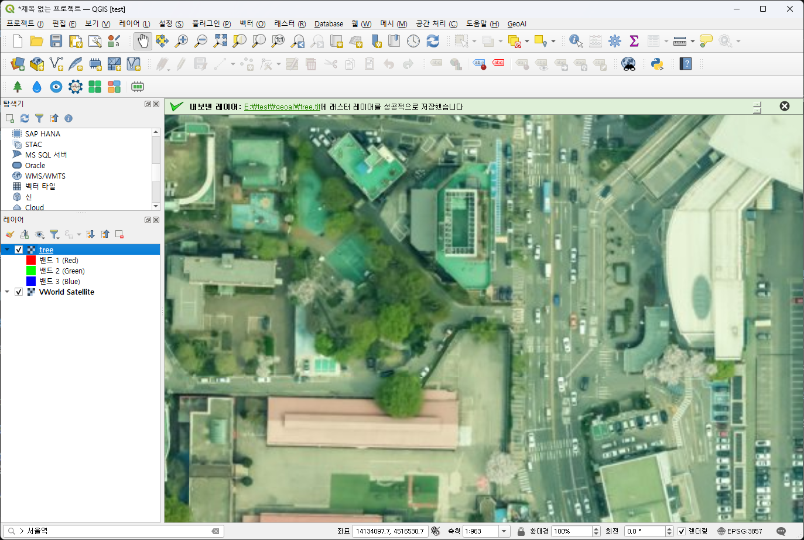
tree 레이어로 올려 사용하는 예
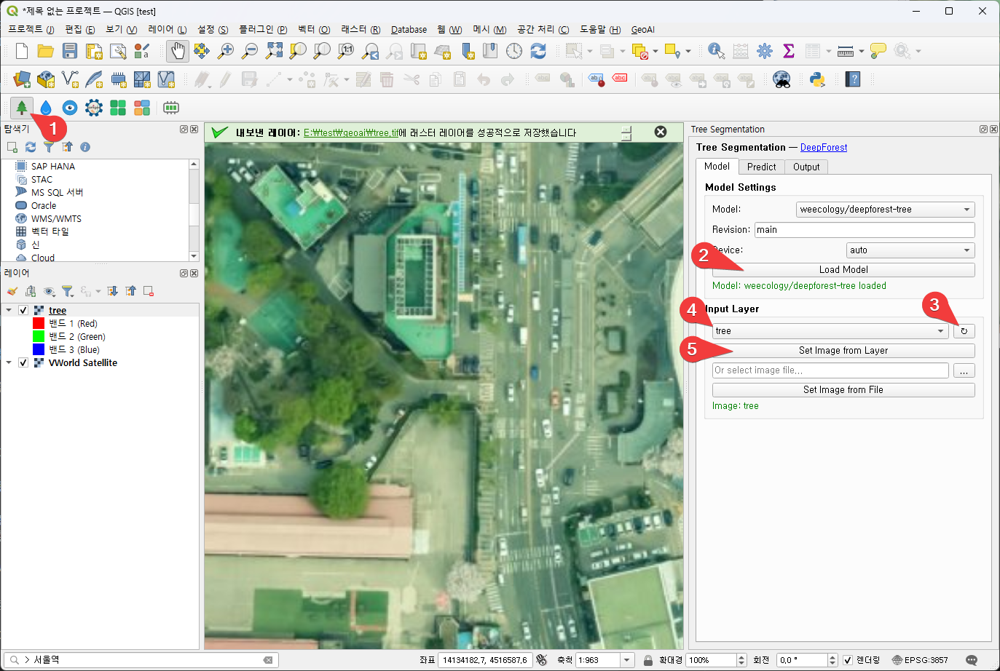
-
geoAI 툴바에서 나무 모양의 아이콘(Tree Segmentation)을 누른다.
-
“Load Model” 버튼을 눌러 나무 찾기 AI 모델(Deep Forest)을 로드한다.(메모리에 올린다.)
-
레이어 다시 읽기 버튼을 누른다.
-
geoTiff 파일이 올라가 있는 “tree” 레이어를 선택하다.
-
“Set Image from layer” 버튼을 눌러 위에서 선택한 레이어를 AI가 입력 이미지로 사용하도록 한다.
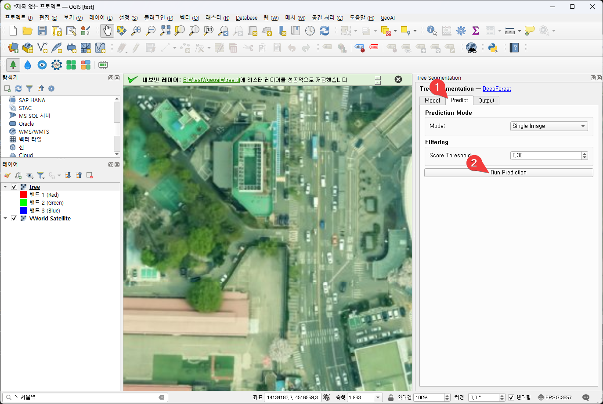
-
Predict 탭을 선택한다.
-
Run Prediction“ 버튼을 클릭해 사진에서 나무가 있는 부분을 찾는 예측을 시작한다.
결과
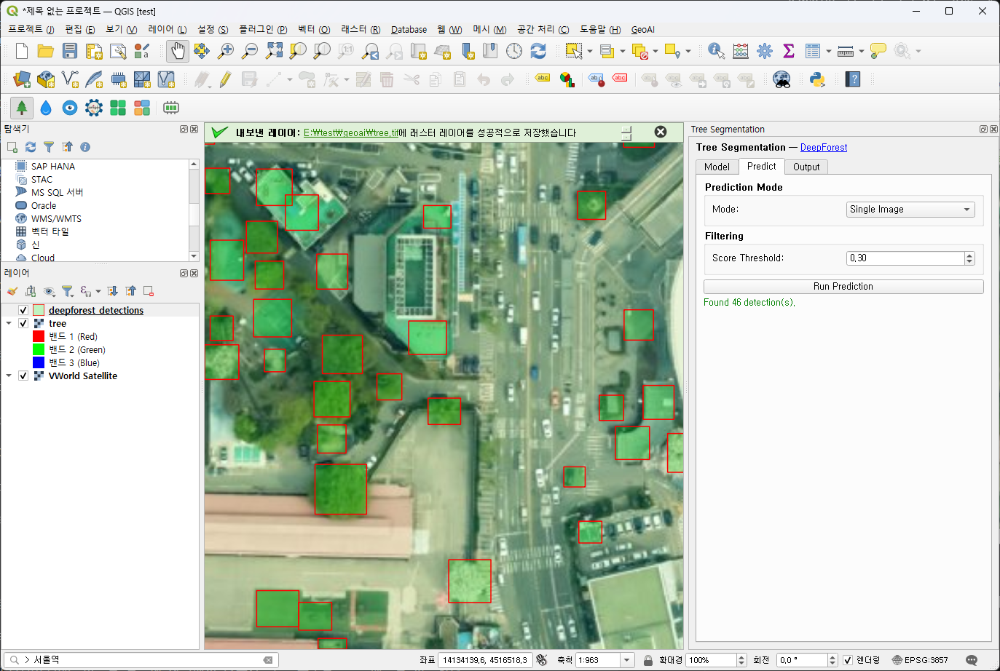
AI가 위성사진에서 나무 부분을 찾아 빨간색 네모로 표시해 준다.
2. 위성사진에서 물 찾기(Water Segmentation)
테스트용 이미지 생성 방법을 이용해 지도에 물이 보이는 영역을 geoTiff로 저장한 후 사용한다.
이 예에서는 “> 사곡면” 으로 검색해 “충남 공주시 사곡면” 일대를 geoTiff로 저장해 사용했다.
OmniWaterMask 모델을 사용하며, 정확한 탐지를 위해서는 NIR 채널까지 사용해야 하지만, 이 예에서는 RGB 밴드만 사용한다. (NIR 채널이 포함된 샘플을 다운로드 하려면 회원가입을 해야 하는 등 시간이 오래 걸려서 강의에서는 사용하지 않음)
이 예에서는 “water” 레이어로 올려 사용한다.
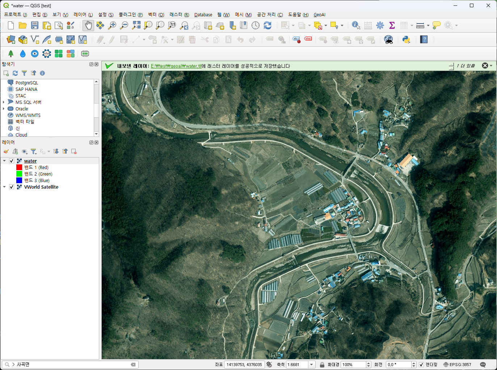
water 레이어로 올려 사용하는 예
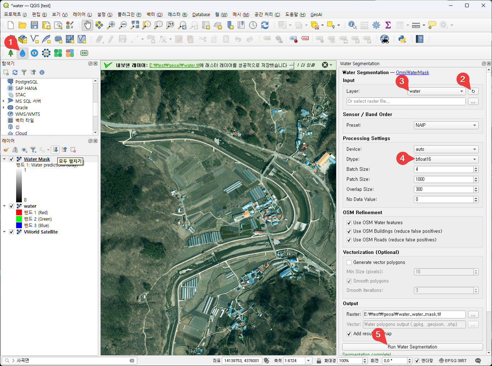
-
geoAI 툴바에서 물방울 모양의 아이콘(Water Segmentation)을 누른다.
-
레이어 새로고침 버튼을 누른다.
-
Water 레이어를 선택한다.
-
Dtype을 “bfloat16” 으로 설정한다. 처리 속도가 빨라진다.
-
“Run Water Segmentation” 버튼을 눌러 AI를 이용한 물찾기를 시작한다.
결과
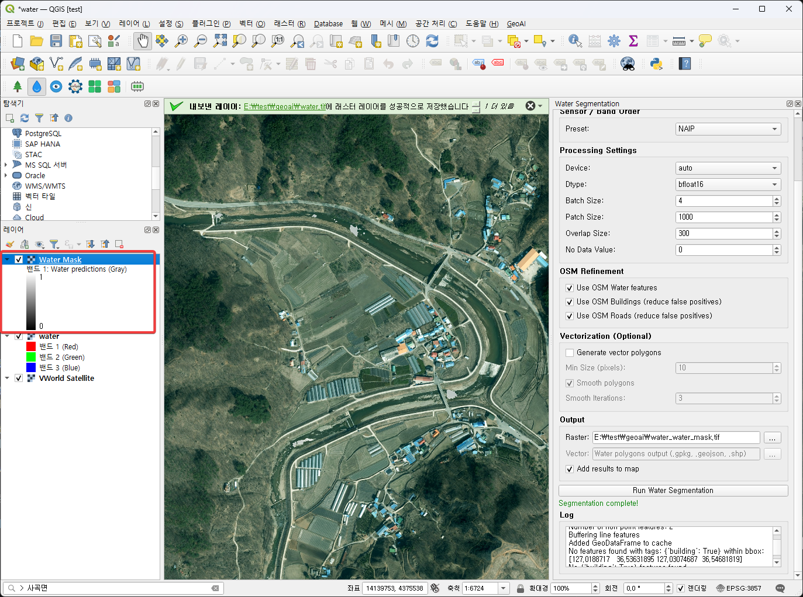
3. 위성사진에 대해 AI에게 질의하기(Moondream VLM)
* VLM: Vision-Language Model: 시각 정보와 언어 정보를 동시에 처리하는 AI 모델
Moondream VLM 모델을 사용
이 예에서는 water.tif 파일을 AI 입력용 이미지로 사용한다.
Caption
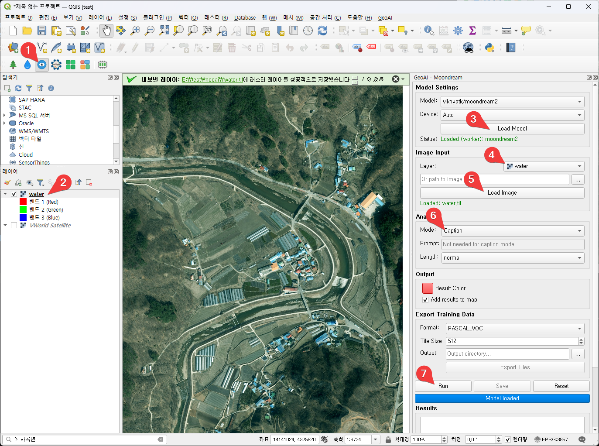
-
getAI 툴바에서 Moondream VLM을 누른다.
-
Water.tif 파일을 이용해(끌어다 놓아) Water 레이어를 추가한다.
-
“Load Model” 버튼을 누른다.
-
레이어를 Water 레이어로 설정한다.
-
“Load Image” 버튼을 누른다. AI 입력용 이미지로 water 레이어의 water.tif 파일을 사용한다.
-
Mode를 “Caption“으로 설정한다.
-
“Run” 버튼을 누른다.
결과
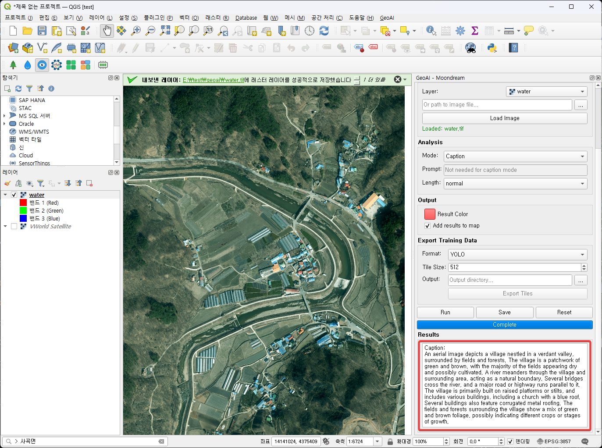
Caption:
An aerial image depicts a village nestled in a verdant valley, surrounded by fields and forests. The village is a patchwork of green and brown, with the majority of the fields appearing dry and possibly cultivated. A river meanders through the village and surrounding area, acting as a natural boundary. Several bridges cross the river, and a major road or highway runs parallel to it. The village is primarily built on raised platforms or stilts, and includes various buildings, including a church with a blue roof. Several buildings also feature corrugated metal roofing. The fields and forests surrounding the village show a mix of green and brown foliage, possibly indicating different crops or stages of growth.
(번역)
항공 사진에는 푸른 계곡에 자리 잡은 마을이 들판과 숲으로 둘러싸여 있는 모습이 담겨 있습니다. 마을은 초록색과 갈색이 어우러진 풍경을 보여주며, 대부분의 들판은 메말라 있거나 경작 중인 것으로 보입니다. 강이 마을과 주변 지역을 구불구불 흐르며 자연적인 경계를 이루고 있습니다. 강에는 여러 개의 다리가 놓여 있고, 주요 도로 또는 고속도로가 강과 나란히 뻗어 있습니다. 마을은 주로 높은 단이나 기둥 위에 세워져 있으며, 파란색 지붕의 교회를 비롯한 다양한 건물들이 있습니다. 몇몇 건물은 골함석 지붕을 사용하고 있습니다. 마을 주변의 들판과 숲에는 초록색과 갈색 잎이 섞여 있는데, 이는 다양한 작물이나 성장 단계를 나타내는 것일 수 있습니다.
Query
위성사진에 대해 물어보는 경우
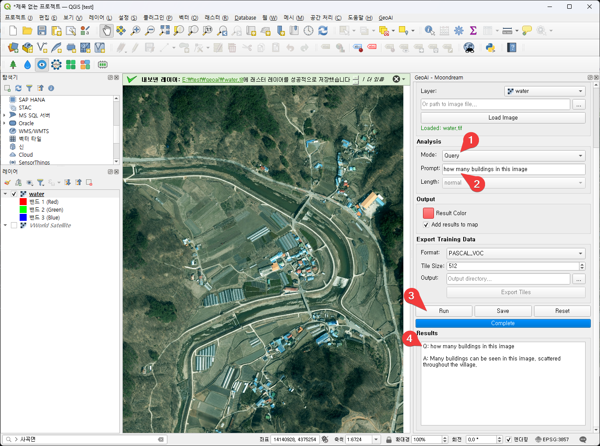
질문 : how many buildings in this image
-
Mode를 “Query“로 설정한다.
-
prompt를 “how many buildings in this image“으로 설정한다.
-
“Run” 버튼을 누른다.
-
결과를 확인한다.
Q: how many buildings in this image
A: Many buildings can be seen in this image, scattered throughout the village.
질문: 이 사진에는 건물이 몇 개나 있나요?
답변: 이 사진에는 마을 곳곳에 흩어져 있는 많은 건물들이 보입니다.
또 다른 질문: What is the most commonly used color for the building roofs in this image?
Q: What is the most commonly used color for the building roofs in this image?
A: The most commonly used color for the building roofs in this image is blue.
질문: 이 이미지에서 건물 지붕에 가장 많이 사용된 색상은 무엇인가?
답변: 이 이미지에서 건물 지붕에 가장 많이 사용된 색상은 파란색이다.
Detect
다리 질의
-
모드를 “Detect“로 설정한다.
-
prompt를 “bridge“로 설정한다.
-
“Run” 버튼을 클릭한다.
-
결과를 확인한다. 1개를 확인했다는 메시지가 보인다.
-
지도 위에 빨간 네모 박스로 다리를 표시한 걸 확인한다.
비닐하우스 질의
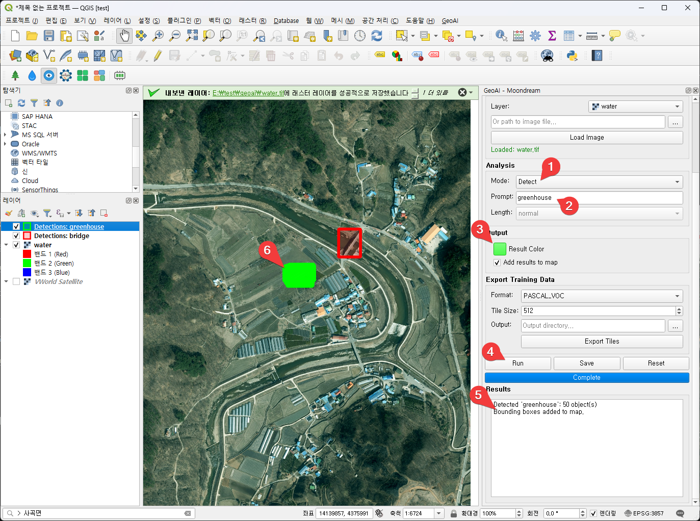
-
모드를 “Detect“로 설정한다.
-
prompt를 “greenhouse“로 설정한다.
-
Result Color를 초록색 등으로 변경한다. (좀전의 다리와 다른 색으로 표시하기 위해)
-
“Run” 버튼을 클릭한다.
-
결과를 확인한다. 50개를 확인했다는 메시지가 보인다.
-
지도 위에 초록색 네모 박스로 비닐하우스를 표시한 걸 확인한다. 실제로는 50개를 각각 네모로 표시했는데, 겹쳐져서 마치 영역을 전부 칠해놓은 것처럼 보이고 있다.
Point
비닐하우스를 점으로 표시
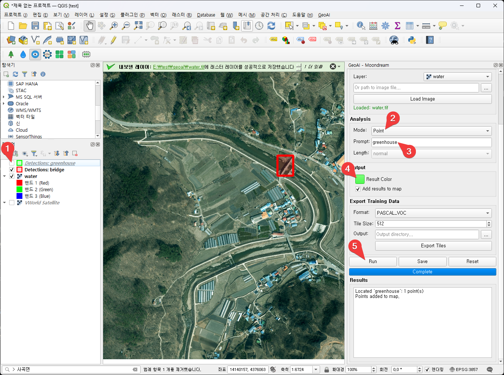
-
이전 결과 레이어가 영향을 미치면 지우거나 레이어 체크를 풀어 보이지 않도록 한다. 이 경우에는 레이어 체크를 풀어 보이지 않도록 했다.
-
모드를 “Point“로 설정한다.
-
prompt를 “greenhouse“로 설정한다.
-
Result Color를 초록색 등으로 변경한다. (좀전의 다리와 다른 색으로 표시하기 위해)
-
“Run” 버튼을 클릭한다.
결과
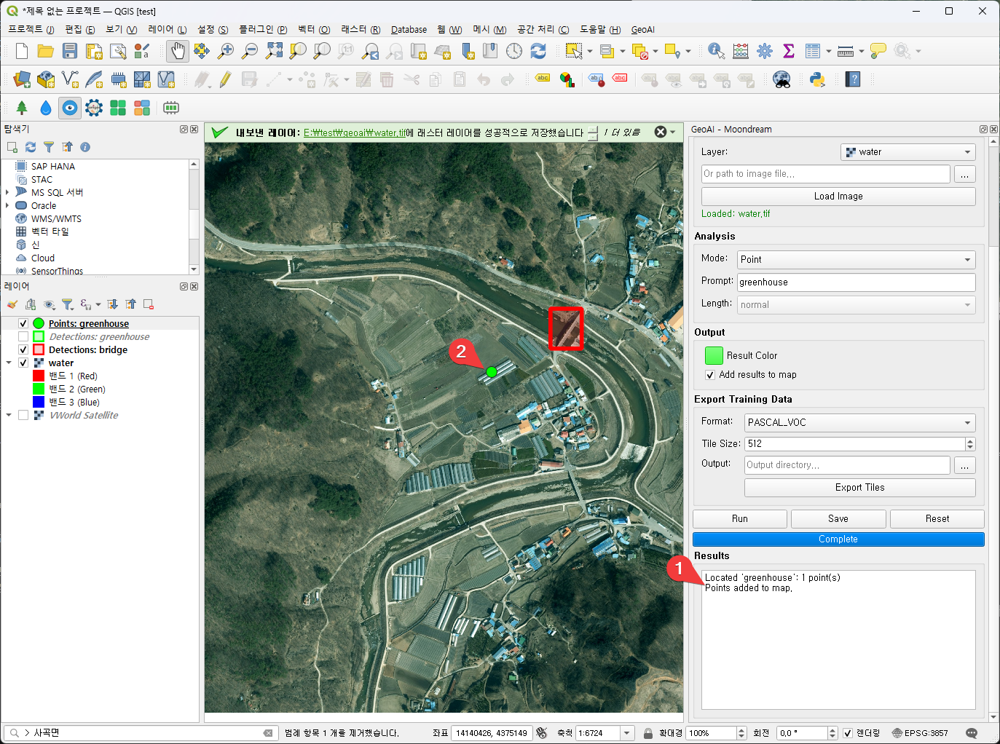
-
결과를 확인한다. 점 1개를 추가했다는 메시지가 보인다
-
지도 위에 초록색 점으로 비닐하우스를 표시한 걸 확인한다.